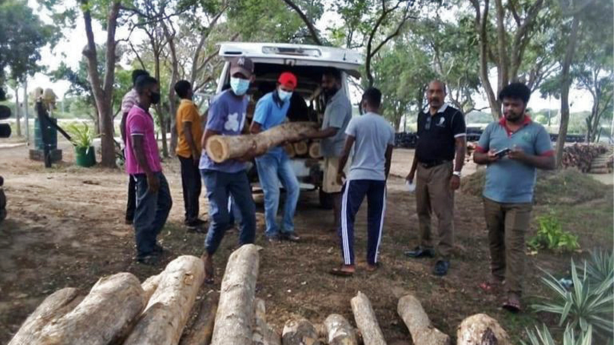
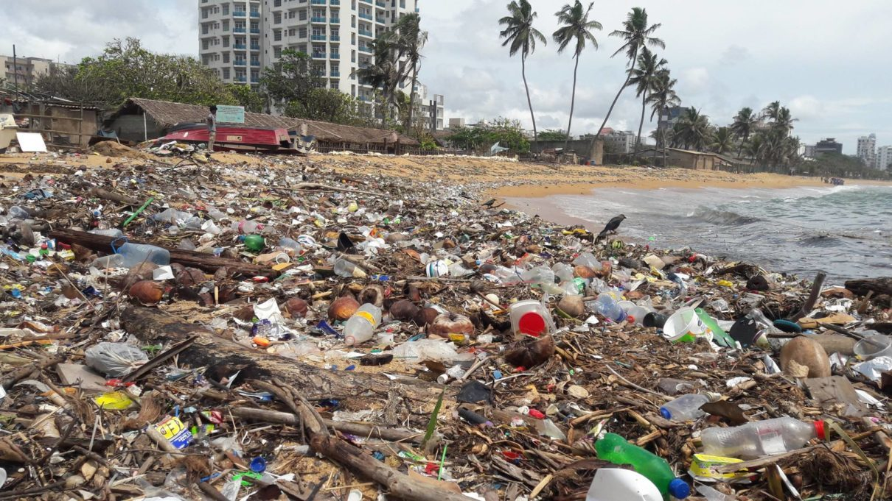

Our current environmental problems are numerous and severe, ranging from deforestation and climate change to pollution of the air and water. These problems have a big effect on the earth; they have an effect on species, ecosystems, and human health. Particularly dangerous to the environment is pollution, which is a major factor in many problems including habitat degradation, biodiversity loss, and global warming.
Air pollution causes respiratory illnesses, cardiovascular issues, and early mortality. It is mostly caused by industrial pollutants, automobile exhaust, and agricultural activities. Water pollution affects aquatic life and contaminates supplies of drinking water when contaminants are released into rivers, lakes, and the ocean. The overuse of single-use plastics leads to plastic pollution, which endangers marine ecosystems and deteriorates beaches and coastal regions. Deforestation decreases biodiversity, speeds up climate change, and eliminates essential ecosystems. It is fueled by logging, agriculture, and urbanization. Global warming, resulting from the build-up of greenhouse gases in the atmosphere, is causing temperature increases, severe weather, an increase in sea level, and the disturbance of ecosystems.
Understanding these environmental challenges is crucial for addressing them effectively and implementing solutions to mitigate their impact. By learning about the causes and consequences of pollution, we can take proactive steps to reduce our carbon footprint, protect natural resources, and preserve the planet for future generations.
Air pollution is a significant environmental issue caused by the release of harmful gases and particulate matter into the atmosphere. Sources of air pollution include vehicle emissions, industrial activities, and agricultural practices. These pollutants, including nitrogen oxides, sulfur dioxide, carbon monoxide, and particulate matter, have serious health effects, leading to respiratory diseases, cardiovascular problems, and premature death. Additionally, air pollution contributes to environmental degradation, smog formation, and climate change. To combat air pollution, it is essential to reduce emissions from vehicles and industries, promote clean energy sources, and implement policies to improve air quality and protect public health.
Water pollution is a pressing environmental concern caused by the contamination of water bodies with harmful substances. Sources of water pollution include industrial discharge, agricultural runoff, and improper waste disposal. Pollutants such as chemicals, heavy metals, and sewage can have devastating effects on aquatic ecosystems and human health. Water pollution leads to the degradation of water quality, loss of biodiversity, and the spread of waterborne diseases. To address water pollution, it is crucial to implement proper waste management practices, regulate industrial and agricultural activities, and invest in wastewater treatment infrastructure to ensure clean and safe water for all.
Plastic pollution is a global environmental crisis resulting from the excessive use and improper disposal of plastic products. Single-use plastics, such as bottles, bags, and packaging, are the primary contributors to this problem. These plastics take hundreds of years to decompose, and many end up in water bodies, where they harm marine life, contaminate ecosystems, and degrade coastal areas. Microplastics, tiny plastic particles, further exacerbate the issue, entering the food chain and posing health risks to humans and wildlife. To combat plastic pollution, it is essential to reduce plastic consumption, promote recycling and waste management practices, and develop sustainable alternatives to plastic products.
Deforestation is the widespread removal of forests to make way for agriculture, urbanization, and industrial activities. This practice has devastating consequences for the environment, including loss of biodiversity, habitat destruction, and climate change. Forests play a crucial role in regulating the Earth's climate by absorbing carbon dioxide from the atmosphere. Deforestation disrupts this balance, releasing stored carbon into the atmosphere and contributing to global warming. Additionally, deforestation leads to soil erosion, loss of water resources, and displacement of indigenous communities. To address deforestation, it is essential to promote sustainable land management practices, protect forested areas, and support reforestation efforts.
Climate change refers to the long-term alteration of temperature and typical weather patterns on Earth. It is primarily caused by human activities, such as the burning of fossil fuels, deforestation, and industrial processes, which release greenhouse gases like carbon dioxide and methane into the atmosphere. These gases trap heat, leading to a rise in global temperatures, melting ice caps, rising sea levels, and more frequent and intense weather events such as hurricanes, droughts, and heatwaves. Climate change poses a significant threat to ecosystems, biodiversity, and human well-being, making it imperative to mitigate emissions and adapt to its impacts through sustainable practices and policies.